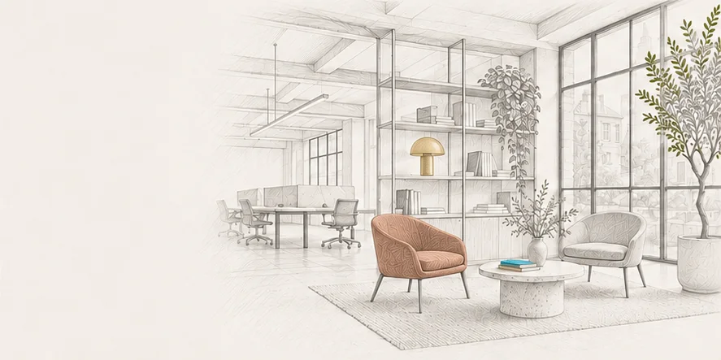

Strategy & Design
From brief to coordinated design.
Planning an office move or refurbishment? We help you decide what you need, test the space and coordinate the design before fit-out.
Define what the workplace needs to do
We look at how people work, who uses the space and what needs to change.
What you get An agreed brief and criteria for comparing options.
- Stakeholder workshops
- Headcount and occupancy
- Accessibility and work settings
- Budget and programme priorities
Test the building against the brief
We assess how much space you need and check what each building can support before you commit.
What you get A preferred option with costs, constraints and decisions to resolve.
- Stay-versus-move and site comparisons
- Capacity and test fits
- Base-build services and constraints
- Early costs, approvals and programme
Develop the preferred design
We work through how the space feels and functions, from the arrival sequence to the places people need to focus.
What you get An agreed concept, outline specification and updated cost plan.
- Layout and circulation
- Material and finish palettes
- Furniture and lighting concepts
- Design reviews and cost checks
Bring the technical design together
We resolve how the layout, finishes and building systems fit together before procurement and fit-out.
What you get A coordinated design package suited to the agreed procurement route.
- Building services, lighting and acoustics
- AV, IT and furniture interfaces
- Landlord approvals and statutory requirements
- Coordinated drawings and specifications
What are you planning?
- Occupiers
- Compare staying, moving or refurbishing. Set the brief around how your teams work, the budget and your move date.
- Landlords
- Assess how an existing floor could be refurbished, subdivided or offered as a fitted suite. Test cost, programme and likely occupier needs.
- Agents
- Use capacity checks, test fits and outline budgets to show prospective occupiers how a space could work before they commit.
- Serviced office operators
- Test desk yield, suite mix and shared amenities against member experience and the target opening date.
